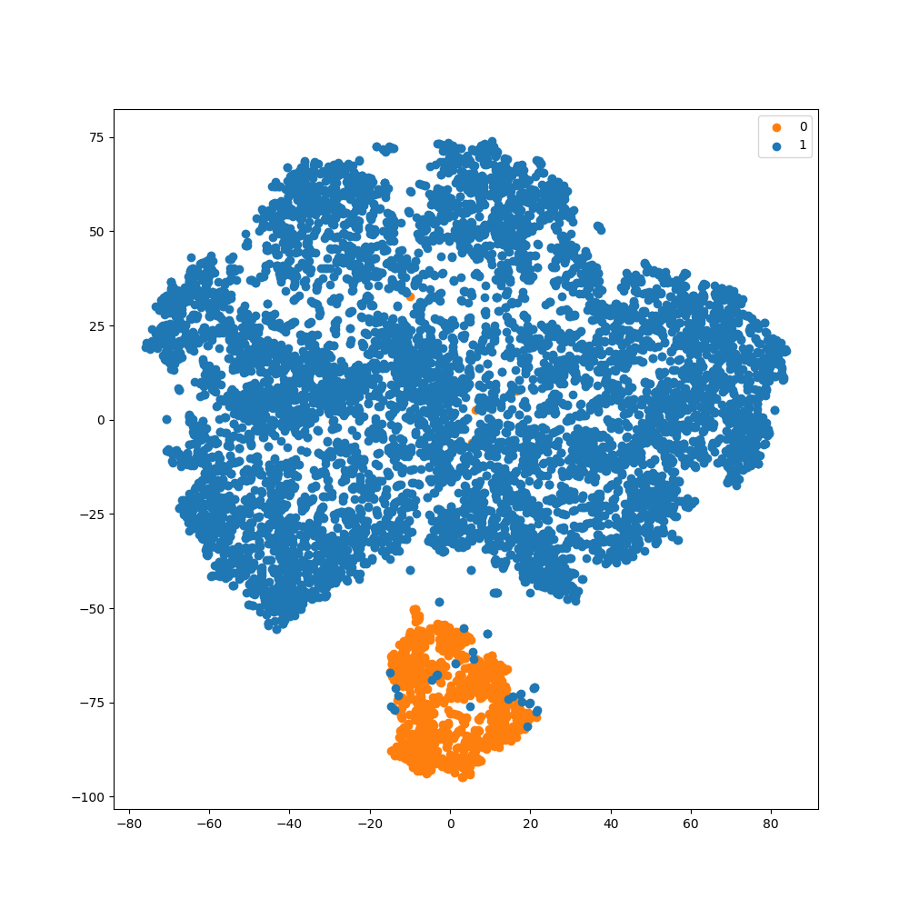
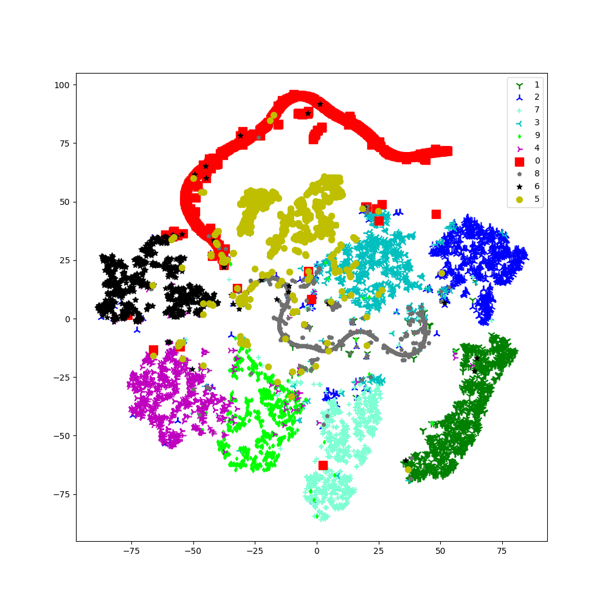
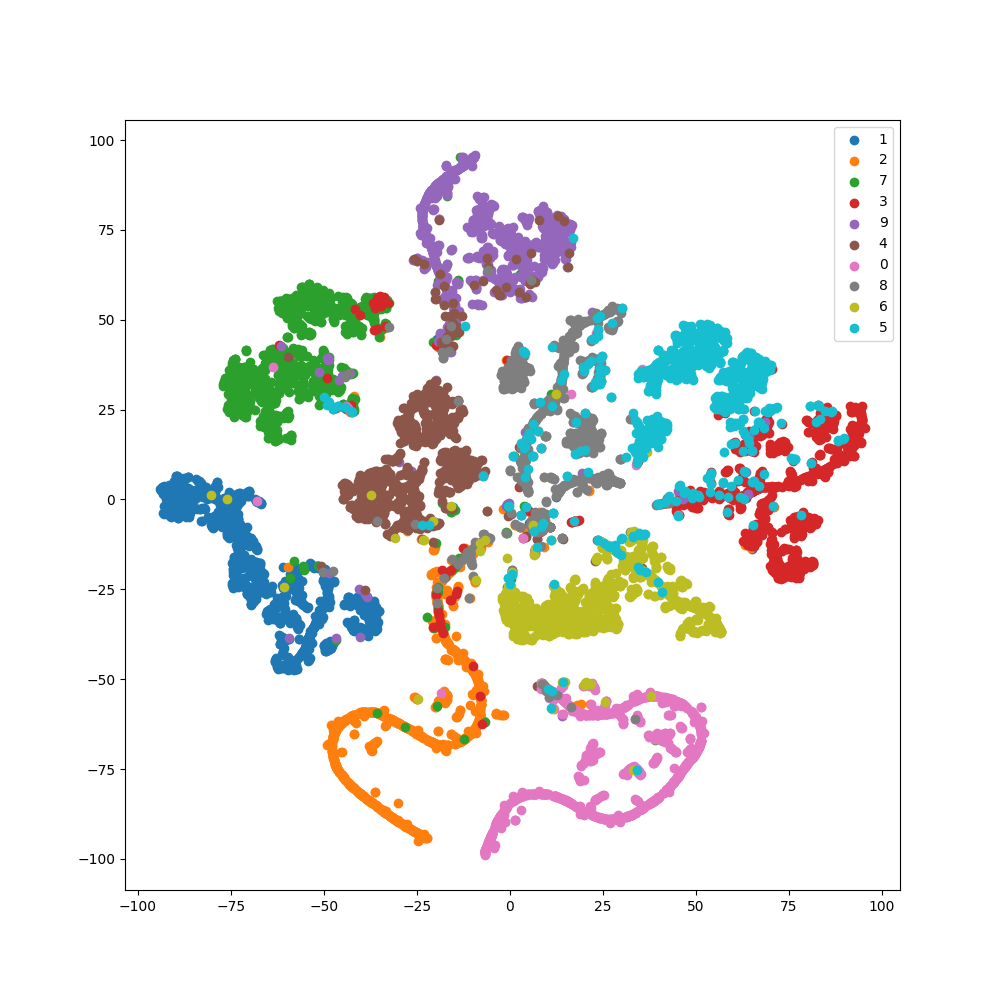
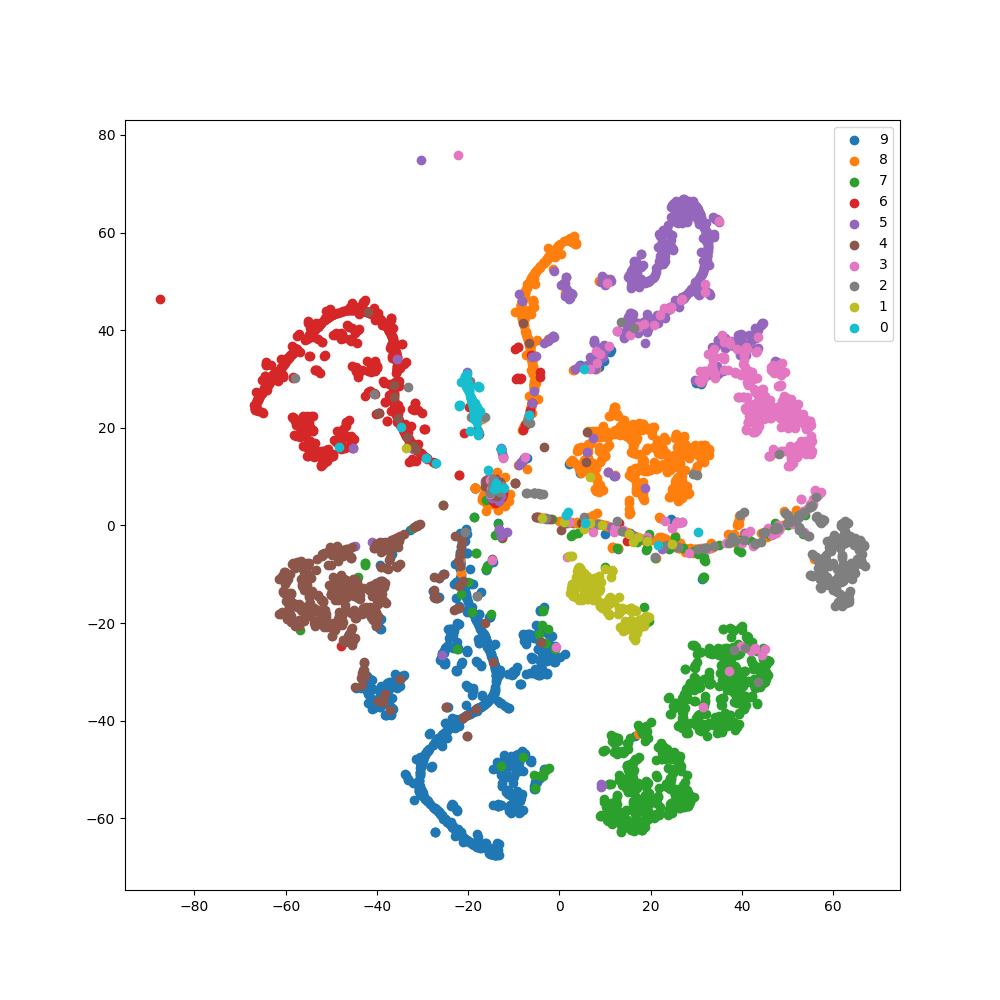

tsne_visualization#
- class imbal.classification.tsne_visualization(model, data, labels, representation_layer_index=-2, perplexity=30, save_figure=None, s=None, c=None, marker=None)#
Bases:
Provides a visualization of a model’s representation space using TSNE.
This function will always plot rarer classes last, allowing for those rare classes to always be more visible in the TSNE plot. This is because points plotted first may be overwritten by points plotted later, so plotting rare classes last ensures the rare classes are not overwritten by common classes. An example of this can be seen below.
- Parameters:
model – The TensorFlow model whose representation space you wish to visualize.
data – The data whose representation you wish to visualize, as a column vector.
labels – The corresponding labels for the provided data, as a column vector.
representation_layer_index – Optional, default \(-2\). The index of the layer of your model to extract the representation from. Defaults to the second to last layer of the provided model.
perplexity – Optional, default \(30\). See sklearn.manifold.TSNE. The suggested perplexity value from the paper which introduced t-SNE <https://www.jmlr.org/papers/volume9/vandermaaten08a/vandermaaten08a.pdf>_ is from 5 to 50.
save_figure – Optional, default
None. If set to a string, will save the resultant plot to the specified path.s – Optional, default
None. If notNone, a list of floats of length equal to the number of classes, where each float represents the marker size for the class when plotted, in sorted order. See matplotlib.pyplot.scatter.c –
Optional, default
None. If notNone, a list of colors for each class when plotted, in sorted order. See matplotlib.pyplot.scatter.marker –
Optional, default
None. If notNone, a list of marker shapes for each class when plotted, in sorted order. See matplotlib.pyplot.scatter.
Returns:
NoneExample:
>>> # For this example, assume a trained model is saved in 'model', and >>> # data and labels are stored in 'data' and 'labels' respectively. >>> imbal.classification.tsne_visualization( >>> model, >>> data, >>> labels, >>> perplexity=20 >>> )
Example of Rare Class Last Plotting Benefits#
By plotting rare classes last, we can ensure that instances of rare classes are always plotted above instances of more common classes, leading to a clearer visual of the TSNE plot.

As you can see in the visualization above, in the case where the labels are plotted in order (left), the few orange points that have been plotted in the blue region are almost entirely lost. On the other hand, using our “rare plotted last” method (right), all the orange points plotted within the blue region are clearly visible.
Example of Setting Marker Shape, Size, and Color#
Below is an example of a TSNE plot of the representation space of a model trained on MNIST data. The following parameters have been passed to the TSNE visualization:
>>> imbal.classification.tsne_visualization(
>>> model,
>>> x_test,
>>> y_test,
>>> s=[100, 90, 80, 70, 60, 50, 40, 30, 20, 10],
>>> marker=['s','1','2','3','4','o','*','+','p','d'],
>>> c=['r', 'g', 'b', 'c', 'm', 'y', 'k', 'aquamarine', '#707070', '#00FF00']
>>> )

Example of Representation Issues with Imbalanced Data#


As shown visually above, when classes are relatively balanced (left), there is a clearer separation between classes. However, when working with imbalanced data (right) and failing to address the imbalance in any manner, it is far more likely to see overlaps in the representation of each class (especially near the middle of the plot in this example).